我一直在找一份简明的神经网络入门，然而在中文圈里并没有找到。直到我看到了这份162行的Python实现，以及对应的油管视频之后，我才觉得这就是我需要的极简入门资料。这份极简入门笔记不需要突触的图片做装饰，也不需要赘述神经网络的发展历史；要推导有推导，要代码有代码，关键是，它们还对得上。对于欠缺的背景知识，利用斯坦福大学的神经网络wiki进行了补全。
单个神经元
神经网络是多个“神经元”（感知机）的带权级联，神经网络算法可以提供非线性的复杂模型，它有两个参数：权值矩阵{Wl}和偏置向量{bl}，不同于感知机的单一向量形式，{Wl}是复数个矩阵，{bl}是复数个向量，其中的元素分别属于单个层，而每个层的组成单元，就是神经元。
神经元
神经网络是由多个“神经元”（感知机）组成的，每个神经元图示如下：

这其实就是一个单层感知机，其输入是由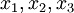和+1组成的向量，其输出为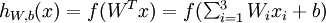，其中f是一个激活函数，模拟的是生物神经元在接受一定的刺激之后产生兴奋信号，否则刺激不够的话，神经元保持抑制状态这种现象。这种由一个阈值决定两个极端的函数有点像示性函数，然而这里采用的是Sigmoid函数，其优点是连续可导。
Sigmoid函数
常用的Sigmoid有两种——
单极性Sigmoid函数
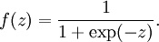
或者写成

其图像如下

双极性Sigmoid函数
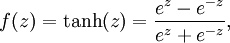
或者写成
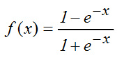
把第一个式子分子分母同时除以ez，令x=-2z就得到第二个式子了，换汤不换药。
其图像如下

从它们两个的值域来看，两者名称里的极性应该指的是正负号。从导数来看，它们的导数都非常便于计算：
对于有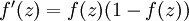，对于tanh，有 。
。
视频作者Ryan还担心观众微积分学的不好，细心地给出了1/(1+e^-x)求导的过程：
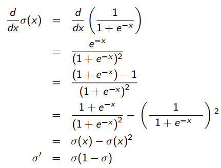
一旦知道了f(z)，就可以直接求f'(z)，所以说很方便。
本Python实现使用的就是1/(1+e^-x)
- def sigmoid(x):
- """
- sigmoid 函数，1/(1+e^-x)
- :param x:
- :return:
- """
- return 1.0/(1.0+math.exp(-x))
- def dsigmoid(y):
- """
- sigmoid 函数的导数
- :param y:
- :return:
- """
- return y * (1 - y)
也可以使用双曲正切函数tanh
- def sigmoid(x):
- """
- sigmoid 函数，tanh
- :param x:
- :return:
- """
- return math.tanh(x)
其导数对应于：
- def dsigmoid(y):
- """
- sigmoid 函数的导数
- :param y:
- :return:
- """
- return 1.0 - y ** 2
神经网络模型
神经网络就是多个神经元的级联，上一级神经元的输出是下一级神经元的输入，而且信号在两级的两个神经元之间传播的时候需要乘上这两个神经元对应的权值。例如，下图就是一个简单的神经网络：

其中，一共有一个输入层，一个隐藏层和一个输出层。输入层有3个输入节点，标注为+1的那个节点是偏置节点，偏置节点不接受输入，输出总是+1。
定义上标为层的标号，下标为节点的标号，则本神经网络模型的参数是：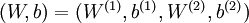，其中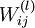是第l层的第j个节点与第l+1层第i个节点之间的连接参数（或称权值）；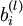表示第l层第i个偏置节点。这些符号在接下来的前向传播将要用到。
前向传播
虽然标题是《（误差）后向传播神经网络入门》，但这并不意味着可以跳过前向传播的学习。因为如果后向传播对应训练的话，那么前向传播就对应预测（分类），并且训练的时候计算误差也要用到预测的输出值来计算误差。
定义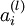为第l层第i个节点的激活值（输出值）。当l=1时，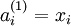。前向传播的目的就是在给定模型参数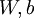的情况下，计算l=2,3,4…层的输出值，直到最后一层就得到最终的输出值。具体怎么算呢，以上图的神经网络模型为例：
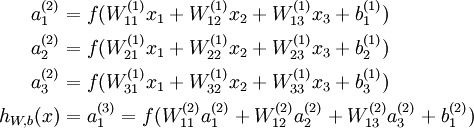
这没什么稀奇的，核心思想是这一层的输出乘上相应的权值加上偏置量代入激活函数等于下一层的输入，一句大白话，所谓中文伪码。
另外，追求好看的话可以把括号里面那个老长老长的加权和定义为一个参数：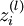表示第l层第i个节点的输入加权和，比如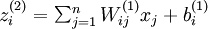。那么该节点的输出可以写作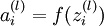。
于是就得到一个好看的形式：
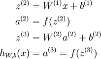
在这个好看的形式下，前向传播可以简明扼要地表示为：

在Python实现中，对应如下方法：
- def runNN(self, inputs):
- """
- 前向传播进行分类
- :param inputs:输入
- :return:类别
- """
- if len(inputs) != self.ni - 1:
- print 'incorrect number of inputs'
- for i in range(self.ni - 1):
- self.ai[i] = inputs[i]
- for j in range(self.nh):
- sum = 0.0
- for i in range(self.ni):
- sum += ( self.ai[i] * self.wi[i][j] )
- self.ah[j] = sigmoid(sum)
- for k in range(self.no):
- sum = 0.0
- for j in range(self.nh):
- sum += ( self.ah[j] * self.wo[j][k] )
- self.ao[k] = sigmoid(sum)
- return self.ao
其中，ai、ah、ao分别是输入层、隐藏层、输出层，而wi、wo则分别是输入层到隐藏层、隐藏层到输出层的权值矩阵。在本Python实现中，将偏置量一并放入了矩阵，这样进行线性代数运算就会方便一些。
后向传播
后向传播指的是在训练的时候，根据最终输出的误差来调整倒数第二层、倒数第三层……第一层的参数的过程。
符号定义
在Ryan的讲义中，符号定义与斯坦福前向传播讲义相似但略有不同：
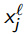：第l层第j个节点的输入。
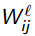：从第l-1层第i个节点到第l层第j个节点的权值。
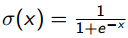：Sigmoid函数。
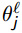：第l层第j个节点的偏置。
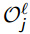：第l层第j个节点的输出。
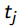：输出层第j个节点的目标值（Target value）。
输出层权值调整
给定训练集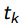和模型输出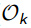（这里没有上标l是因为这里在讨论输出层，l是固定的），输出层的输出误差（或称损失函数吧）定义为：
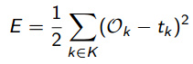
其实就是所有实例对应的误差的平方和的一半，训练的目标就是最小化该误差。怎么最小化呢？看损失函数对参数的导数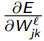呗。
将E的定义代入该导数：
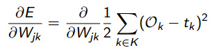
无关变量拿出来：
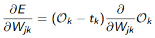
看到这里大概明白为什么非要把误差定义为误差平方和的一半了吧，就是为了好看，数学家都是外貌协会的。
将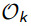=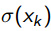（输出层的输出等于输入代入Sigmoid函数）这个关系代入有：
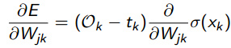
对Sigmoid求导有：
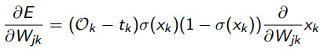
要开始耍小把戏了，由于输出层第k个节点的输入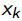等于上一层第j个节点的输出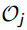乘上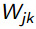，即=，而上一层的输出是与到输出层的权值变量无关的，可以看做一个常量，是线性关系。所以对求权值变量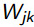的偏导数直接等于，也就是说：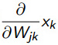=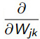()=。
然后将上面用过的=代进去就得到最终的：
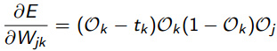
为了表述方便将上式记作：
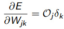
其中：
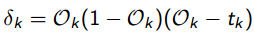
隐藏层权值调整
依然采用类似的方法求导，只不过求的是关于隐藏层和前一层的权值参数的偏导数：

老样子：
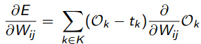
还是老样子：
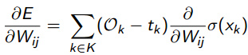
还是把Sigmoid弄进去：
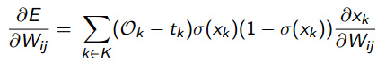
把=代进去，并且将导数部分拆开：
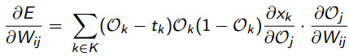
又要耍把戏了，输出层的输入等于上一层的输出乘以相应的权值，亦即=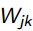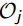，于是得到：
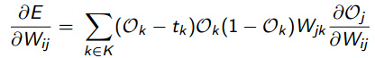
把最后面的导数挪到前面去，接下来要对它动刀了：
再次利用=，这对j也成立，代进去：
再次利用=，j换成i，k换成j也成立，代进去：
利用刚才定义的，最终得到：
其中：
我们还可以仿照的定义来定义一个，得到：
其中
偏置的调整
因为没有任何节点的输出流向偏置节点，所以偏置节点不存在上层节点到它所对应的权值参数，也就是说不存在关于权值变量的偏导数。虽然没有流入，但是偏置节点依然有输出（总是+1），该输出到下一层某个节点的时候还是会有权值的，对这个权值依然需要更新。
我们可以直接对偏置求导，发现：
原视频中说∂O/∂θ=1，这是不对的，作者也在讲义中修正了这个错误，∂O/∂θ=O(1–O)。
然后再求，，后面的导数等于，代进去有
其中，
。
后向传播算法步骤
-
随机初始化参数，对输入利用前向传播计算输出。
-
对每个输出节点按照下式计算delta：
-
对每个隐藏节点按照下式计算delta：
-
计算梯度，并更新权值参数和偏置参数：。这里的是学习率，影响训练速度。
后向传播算法实现
- def backPropagate(self, targets, N, M):
- """
- 后向传播算法
- :param targets: 实例的类别
- :param N: 本次学习率
- :param M: 上次学习率
- :return: 最终的误差平方和的一半
- """
- # http://www.youtube.com/watch?v=aVId8KMsdUU&feature=BFa&list=LLldMCkmXl4j9_v0HeKdNcRA
- # 计算输出层 deltas
- # dE/dw[j][k] = (t[k] - ao[k]) * s'( SUM( w[j][k]*ah[j] ) ) * ah[j]
- output_deltas = [0.0] * self.no
- for k in range(self.no):
- error = targets[k] - self.ao[k]
- output_deltas[k] = error * dsigmoid(self.ao[k])
- # 更新输出层权值
- for j in range(self.nh):
- for k in range(self.no):
- # output_deltas[k] * self.ah[j] 才是 dError/dweight[j][k]
- change = output_deltas[k] * self.ah[j]
- self.wo[j][k] += N * change + M * self.co[j][k]
- self.co[j][k] = change
- # 计算隐藏层 deltas
- hidden_deltas = [0.0] * self.nh
- for j in range(self.nh):
- error = 0.0
- for k in range(self.no):
- error += output_deltas[k] * self.wo[j][k]
- hidden_deltas[j] = error * dsigmoid(self.ah[j])
- # 更新输入层权值
- for i in range(self.ni):
- for j in range(self.nh):
- change = hidden_deltas[j] * self.ai[i]
- # print 'activation',self.ai[i],'synapse',i,j,'change',change
- self.wi[i][j] += N * change + M * self.ci[i][j]
- self.ci[i][j] = change
- # 计算误差平方和
- # 1/2 是为了好看，**2 是平方
- error = 0.0
- for k in range(len(targets)):
- error = 0.5 * (targets[k] - self.ao[k]) ** 2
- return error
注意不同于上文的单一学习率，这里有两个学习率N和M。N相当于上文的，而M则是在用上次训练的梯度更新权值时的学习率。这种同时考虑最近两次迭代得到的梯度的方法，可以看做是对单一学习率的改进。
另外，这里并没有出现任何更新偏置的操作，为什么？
因为这里的偏置是单独作为一个偏置节点放到输入层里的，它的值（输出，没有输入）固定为1，它的权值已经自动包含在上述权值调整中了。
如果将偏置作为分别绑定到所有神经元的许多值，那么则需要进行偏置调整，而不需要权值调整（此时没有偏置节点）。
哪个方便，当然是前者了，这也导致了大部分神经网络实现都采用前一种做法。
完整的实现
已开源到了Github上：https://github.com/hankcs/neural_net
这一模块的原作者是Neil Schemenauer，我做了些注释。
直接运行bpnn.py即可得到输出：
- Combined error 0.171204877501
- Combined error 0.190866985872
- Combined error 0.126126875154
- Combined error 0.0658488960415
- Combined error 0.0353249077599
- Combined error 0.0214428399072
- Combined error 0.0144886807614
- Combined error 0.0105787745309
- Combined error 0.00816264126944
- Combined error 0.00655731212209
- Combined error 0.00542964723539
- Combined error 0.00460235328667
- Combined error 0.00397407912435
- Combined error 0.00348339081276
- Combined error 0.00309120476889
- Combined error 0.00277163178862
- Combined error 0.00250692771135
- Combined error 0.00228457151714
- Combined error 0.00209550313514
- Combined error 0.00193302192499
- Inputs: [0, 0] --> [0.9982333356008245] Target [1]
- Inputs: [0, 1] --> [0.9647325217906978] Target [1]
- Inputs: [1, 0] --> [0.9627966274767186] Target [1]
- Inputs: [1, 1] --> [0.05966109502803293] Target [0]
IBM利用Neil Schemenauer的这一模块（旧版）做了一个识别代码语言的例子，我将其更新到新版，已经整合到了项目中。
要运行测试的话，执行命令
- code_recognizer.py testdata.200
即可得到输出：
- ERROR_CUTOFF = 0.01
- INPUTS = 20
- ITERATIONS = 1000
- MOMENTUM = 0.1
- TESTSIZE = 500
- OUTPUTS = 3
- TRAINSIZE = 500
- LEARNRATE = 0.5
- HIDDEN = 8
- Targets: [1, 0, 0] -- Errors: (0.000 OK) (0.001 OK) (0.000 OK) -- SUCCESS!
值得一提的是，这里的HIDDEN = 8指的是隐藏层的节点个数，不是层数，层数多了就变成DeepLearning了。
Reference
http://arctrix.com/nas/python/bpnn.py
http://code.activestate.com/recipes/578148-simple-back-propagation-neural-network-in-python-s/
https://www.youtube.com/watch?v=aVId8KMsdUU&feature=BFa&list=LLldMCkmXl4j9_v0HeKdNcRA
 The back-propagation algorithm.pdf
The back-propagation algorithm.pdf
http://ufldl.stanford.edu/wiki/index.php/%E7%A5%9E%E7%BB%8F%E7%BD%91%E7%BB%9C
输出层权值调整中的中有一个公式：无关变量拿出来——>求和的符号没有了！
你好，“利用刚才定义的δk，最终得到：”这一步我不太明白是怎么转换的，谢谢！
“由于输出层第k个节点的输入神经网络Xk=OjWjk”，这个不对啊。应该是Xk=sigma(OjWjk+bj)，但是由于是对Wjk求偏导，所以倒数第一层的隐层其他节点是常数，偏导数为0.
输出等于输入代入Sigmoid函数，作为下一级的输入，sigmoid已经代过一次了
结果不对哦；输入为00时，异或结果应该是0；把目标值改成0之后，就不收敛了，无法训练出结果；但是把sigmoid函数改成双曲的就可以，why？
https://github.com/hankcs/neural_net 指的这里的bpnn.py代码
你好，这个链接打不开，能不能重新发一个链接呢
每个变量解释得很清楚，抛出公式前做好了铺垫，赞。
另外提一个公式表达的问题，文章将权值求和用变量z来代替的部分，用了向量的表示方法，但是没有加粗或者尖头来表明z，W，x，b是变量。
谢谢你的建议，这些公式来自斯坦福的讲义，可能与国内的标准有些不同。
请问hankcs，神经网络72.png中的delta k 指的是输出层中计算得到的delta k吗？假如我存在两个隐藏层H1与H2，H2的delta j按照神经网络72.png中计算，那么H1的delta的公式应该如何表示呢，我看了之前的推导，神经网络72.png的公式是利用了输出层与隐层是相连接的关系而导出的，有些困惑，期待解答。
应该是“阈”值（Threshold）不是阀值。其它写的很好，受教了
感谢指正
你整理的文档非常好，但我觉得一个地方不太妥当：
就是你的代码从隐含层到输出层你并没有加上bias*权重，是不是在初始化时，隐含层的节点数也应该+1？，也就是说从隐含层到输出层漏掉了偏置，与你理论地方不太符合。
好问题。
我给隐藏层添加了一个偏置节点，并将其输出固定为+1，代码在：https://gist.github.com/hankcs/53a20ef3cd5f246b9dd1
前后效果如下：
Combined error 0.00193302192499
Combined error 0.00262203286178
在testdata.200测试集上效果不变：
Success rate against test data: 65.20%
Success rate against test data: 65.20%
欢迎进一步探讨。
请问hankcs，你所说的Ryan讲解反向传播神经网络的视频在哪？恕我无知！
请参考Reference
正好我也在看BP的推导[嘻嘻]
感谢指正，的确是x_k=w_jk*O_j，线性相关求导后得到O_j，这样两个不对的地方都解决了。
感谢指正，的确是x_k=w_jk*O_j。
大赞！写得非常棒！有个小疑问呢，就在后向传播中耍把戏那里：
1）输出层第k个节点的输入神经网络38.png等于上一层第j个节点的输出神经网络39.png，这是为什么呢？输出层第K个节点的输入不是等与上一层所有节点的输出和相应权重的加权和吗？
2）文中说「上一层的输出神经网络39.png是与到输出层的权值变量无关的，所以对神经网络39.png求权值变量神经网络40.png的偏导数直接等于其本身」我想问的是既然无关了，求导不就是0吗？线性相关的才会保持本身吧？
大赞！写得非常棒！有个小疑问呢，就在耍把戏那里，输出层第k个节点的输入神经网络38.png等于上一层第j个节点的输出神经网络39.png，这是为什么呢？输出层第K个节点的输入不是等与上一层所有节点的输出和相应权重的加权和吗？
Java smile 这个工具可以关注下 蛮强大的